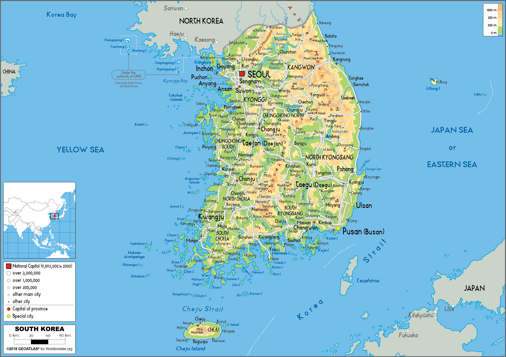
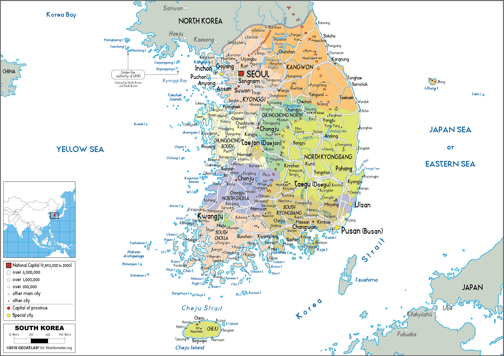
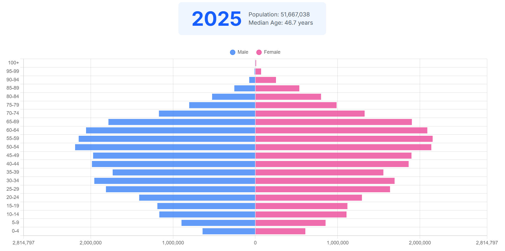
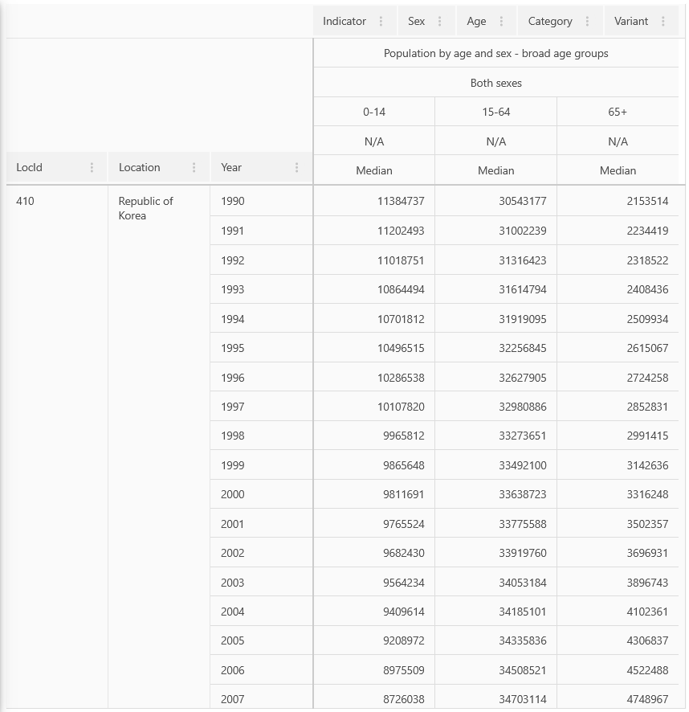
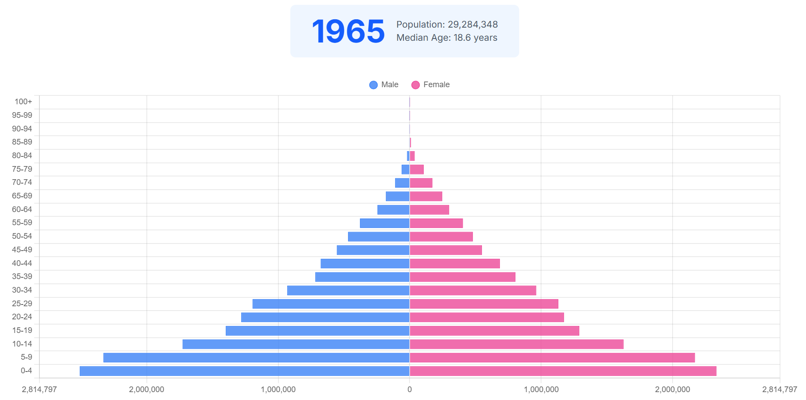
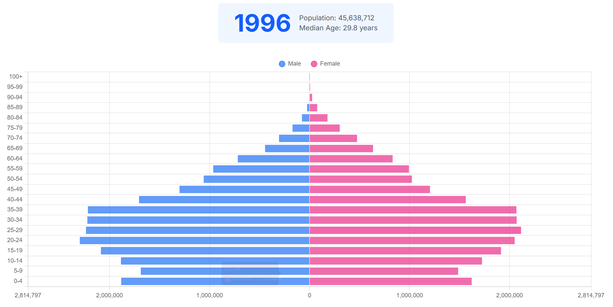

Population
Author and Publisher: Minor Miner Ahmad Ahmadi
Block: C
Date: (perchance) February 24th 2024
Maps:


Demographic Transition:
South Korea's total fertility rate is 0.79, with a crude birth rate of 4.8 per 1,000, a crude death rate of 7.2 per 1,000, an infant mortality rate of 1.9 per 1,000, and a population growth rate of -0.1. The country also has a high average life expectancy at birth of 84.53 years and is densely populated, with 39,254,529 people residing in cities. Based on these features, particularly its very low birth rate, a death rate that exceeds the birth rate, extremely low infant mortality, declining population, long life expectancy, and advanced urbanization, South Korea is best characterized as being in Stage 5 of the Demographic Transition.
Oppotunities
• High Standard of Living: people have access to an advanced services such as healthcare and education
• Advanced Technology: people can adopt newer tchnologies faster
• Experienced Workforce: older people can stay for longer in work to contribute with skills and knowledge (traning younger generation)
Challenges
• Population Decline: A decreasing population risks societal collapse
• Shrinking Workforce: A shrinking workforce may cause service shortages and infrastructural decline
• Aging Population: An aging population may put strain on the young generation (due to pensions) and the healthcare system

Generalizations
• Its high life expectancy suggests advanced healthcare and good living conditions
• Women most likely have access to education as well as contraceptives due to the low birth rates
• Economic conditions on an individual level is harsh as indicated by the low birth rates
Dependency Ratio:
Youth Dependency Ratio: ~14.7
Elderly Dependency Ratio: ~29.3
Total Dependency Ratio: ~43.9

Family Planning and Policies:
Historic Examples:
During the 1960s, South Korea began implementing strong anti-natalist policies to reduce birth rates, due to concerns about overpopulation, beginning with a national family planning program introduced in 1961 as part of its Economic Development Plan. This program was reinforced by the Mother and Child Health Act of 1973, and further supported by international influences such as U.S. aid, that encouraged the adoption of birth control programs and contraceptive technologies. Families with three or more children would face financial penalties such as additional residence tax and increased national health insurance cost to discourage having more children. Abortion was also widely practiced, and supported by the government, as a means of population control, with abortion and sterilization services readily available at family planning clinics. These efforts led to a dramatic decline in the total fertility rate, from about 6.0 in the 1960s to 2.8 in the 1980s and 1.6 in the 1990s.
Recent Examples:
As fertility rates fell too low, the government shifted its approach to pro-natalist policies with the "Framework Act on Low Birth Rate in an Aging Society" announced in 2005. It aimed to increase childbirth particularly among newlyweds and young couples by providing incentives such as housing support, childcare subsidies, and financial assistance for infertility treatments. Despite the shift, however, many policies continued to disproportionately target women like their anti-natalist counterparts. The government also simultaneously restricted access to contraception by removing certain services from national health insurance while expanding support for reproductive technologies like IVF. Furthermore abortion laws began to be more strictly enforced during this until a landmark Constitutional Court ruling in 2019 led to the decriminalization of abortion. However, the government has still remained hesitant to fully integrate abortion care into public healthcare due to concerns about further reducing birth rates.
Demographic Dividend:

• Wider base indicates higher birth rates and rapid population growth
• The pyramid shape indicates a higher dependency ratio
• The sharp peak indicates a relatively low life expectancy / younger population (compared to the other pyramids) Late Stage 2 of the Demographic Transition Model

• Thinner base indicates lower birth rates and hence population growth slowing down
• The rectangular shape in the range of working age indicates a lower dependency ratio
• A more gradual peak indicates a higher life expectancy / population beginning to Late Stage 3 of the Demographic Transition Model
• Very thin base indicates very low birth rates
• The rectangle transitioning to the elderly range indicates an aging population
• The rotated diamond shape indicates very high dependency ratio
• The ‘peak’ starting to resemble a stub indicates high life expectancy Stage 5 of the Demographic Transition Model
Reasoning
These population pyramids were chosen to show South Korea’s transition between late stage 2 to late 3 and then to stage 5 of the demographic transition model which helps show economic growth, and advancements in healthcare. It also helps show the effect of anti-natalist policies implemented in the 1960s as well as the unsuccessfulness of the pro-natalist policies implemented later to combat low birth rates.